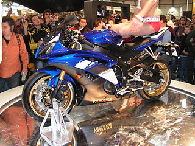

La Yamaha YZF-R6 es una motocicleta deportiva fue fabricada por Yamaha en Japón y exportada a varios países. Fue lanzada en 1999, un año después de su predecesora, la Yamaha FZR600. Los modelos más simples pueden llegar a costar hasta 9.599,00 dólares estadounidenses.Empezó en el año 1999 y en el 2001 recibió unos ligeros cambios tanto estéticos como mecánicos.En 2003 su estética cambió mucho y además fue cuando se pasó a la inyección directa.
